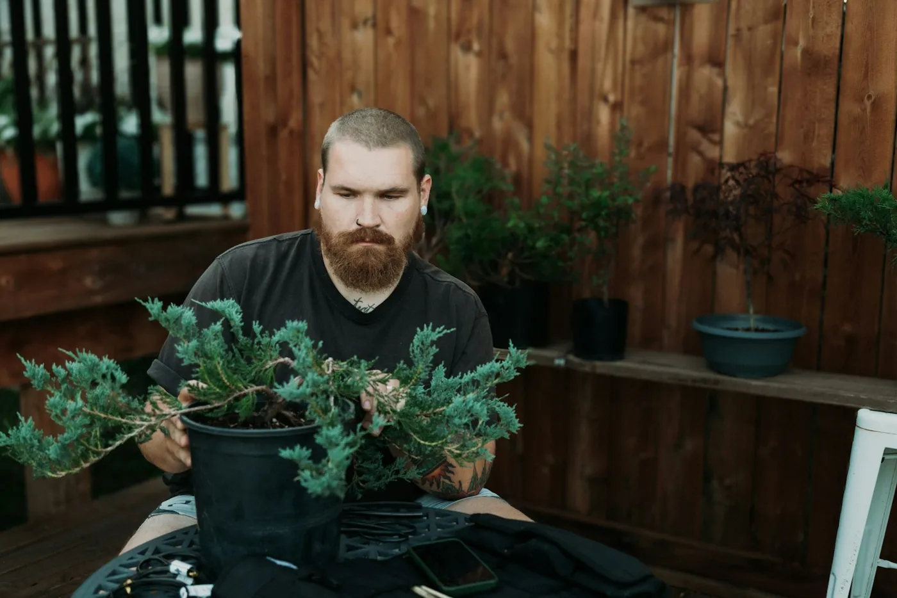

Dessiné en 3D
Votre architecte paysagiste dessine le jardin et vous le fait visiter en 3D avant les travaux.
Architecte paysagiste, paysagistes et jardiniers : Créateck conçoit votre jardin en 3D, l'aménage, puis l'entretient, à Bordeaux et en Gironde depuis 20 ans.

Rapport du soir · 18:42
Terrasse bois posée côté piscine.
Ils nous confient leurs extérieurs
Votre architecte paysagiste dessine le jardin et vous le fait visiter en 3D avant les travaux.
Conception, terrasse, allées, plantations, arrosage et entretien.
Un rapport avec photos à la fin de chaque journée de chantier.
Une vision globale de votre extérieur, du premier dessin à la taille d'hiver.
En savoir plus


« … Le résultat nous comble après une saison. … Une sorte de paradis visuel »
Bernard S. · avis Google · septembre 2025 · Réhabilitation d'une maison et de ses petits jardins

Chaque soir de chantier, vous recevez un point avec photos. Votre architecte paysagiste reste disponible pour vos questions.
Bonsoir ! Journée 6 sur 9 : la terrasse bois est posée côté piscine, les lames sont fixées et poncées. Demain : plantations le long de l'allée et réglage de l'arrosage.

Vous suivez sans vous déplacer.
« en temps et en heure », disent les avis.
L'architecte paysagiste suit le projet.
Avec photos après chaque entretien.
« Je suis absolument ravie du travail réalisé par Créateck Paysage pour ma terrasse, composée d’une partie en travertins et d’une autre en bois. … Le chantier s’est déroulé de manière exemplaire : chaque jour, j’ai reçu un compte rendu clair de l’avancée des travaux, ce qui est vraiment rassurant et appréciable. L’équipe est sérieuse, ponctuelle et très respectueuse. Le résultat final est magnifique. … »
« C'est avec plaisir et bonheur que nous avons mené un projet de rénovation de notre jardin avec Créatech Paysage. Entreprise trés sérieuse et compétente : Alain est à l'écoute, prodigue de bons conseils et les travaux sont bien réalisés en temps et en heure. "Cerise sur le gâteau" la communication est au top : bonne réactivité, recherche de bonnes solutions et compte-rendus journaliers des travaux réalisés. Merci. C'est un succès. »
« Nous sommes ravis de l’aménagement réalisé : un vrai coup de cœur ! L’équipe a été aussi professionnelle que sympathique, toujours respectueuse et à l’écoute. Le résultat est à la fois esthétique et fonctionnel, avec une terrasse en bois parfaitement intégrée au milieu des plantations. … »
« Une équipe très efficace, de grande compétence est intervenue chez moi, à Mérignac, pour éradiquer des bambous devenus trop envahissants. … Les paysagistes Créateck ont vraiment été au niveau ! très prévenants, professionnels, une écoute de qualité, les bonnes solutions ont été trouvées pour arriver à un résultat original et de très bon gout, en respectant mon budget. … »
« Les équipes de création et d'entretien ont transformé mon petit jardin de ville en restant à l'écoute de mes envies tout en guidant mes choix. Depuis 3 ans maintenant, j'ai un contrat d'entretien dont je suis pleinement satisfaite. »
« … Nous sommes très satisfait du travail et du résultat final. L'équipe est très agréable, professionnelle et force de proposition. Nous avions même un compte rendu photo journalier, très pratique pour les propriétaires qui ne seraient pas sur place. Le chantier s'est déroulé dans les temps et proprement jusque dans les plus petites finitions. … »
« La société rêvée quand l’on souhaite faire des travaux. … Professionnalisme, conseils pertinents, qualité du chantier et compétences. Si il y avait 10 étoiles, ils les mériteraient largement. Je recommande les yeux fermés … »
« Je suis très satisfaite de l'équipe Createk Paysage ! La remise en état de mon jardin est parfaite, taille des végétaux, désherbage manuel minutieux d'une allée de stationnement envahie par les herbes, scarification du gazon, massifs redéfinis. Un travail très professionnel et dans la bonne humeur ! … »
« Nous faisons entretenir et nettoyer notre jardin par Créateck et nous sommes à chaque fois ravis du travail effectué. L’amabilité et la discrétion des intervenants sont également très appréciées. … »
« Reprise de terrasse bois : travaux parfaitement réalisés, équipe très professionnelle (rigueur, efficacité, propreté). Nous avons été conseillés pour l'entretien. … »
« Mes travaux d'aménagement du jardin avec installation d'une nouvelle terrasse ont été très bien menés. Le résultat est impeccable et les aménagements très réussis. L'équipe est très professionnelle, ponctuelle et d'une rare amabilité. Je vous recommande cette société. »
« Un vrai succès ! De la conception avec M. Benoit à la réalisation avec les équipes techniques, tout s'est parfaitement déroulé. Une écoute attentive, des conseils judicieux, une capacité à s'adapter. Je recommande vivement ! »
Racontez-nous votre projet en quelques mots : un architecte paysagiste vous rappelle pour fixer une visite.